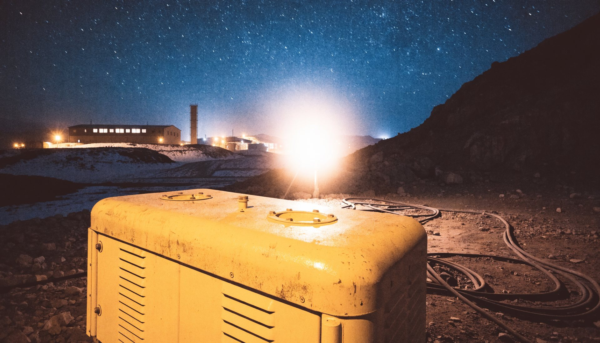
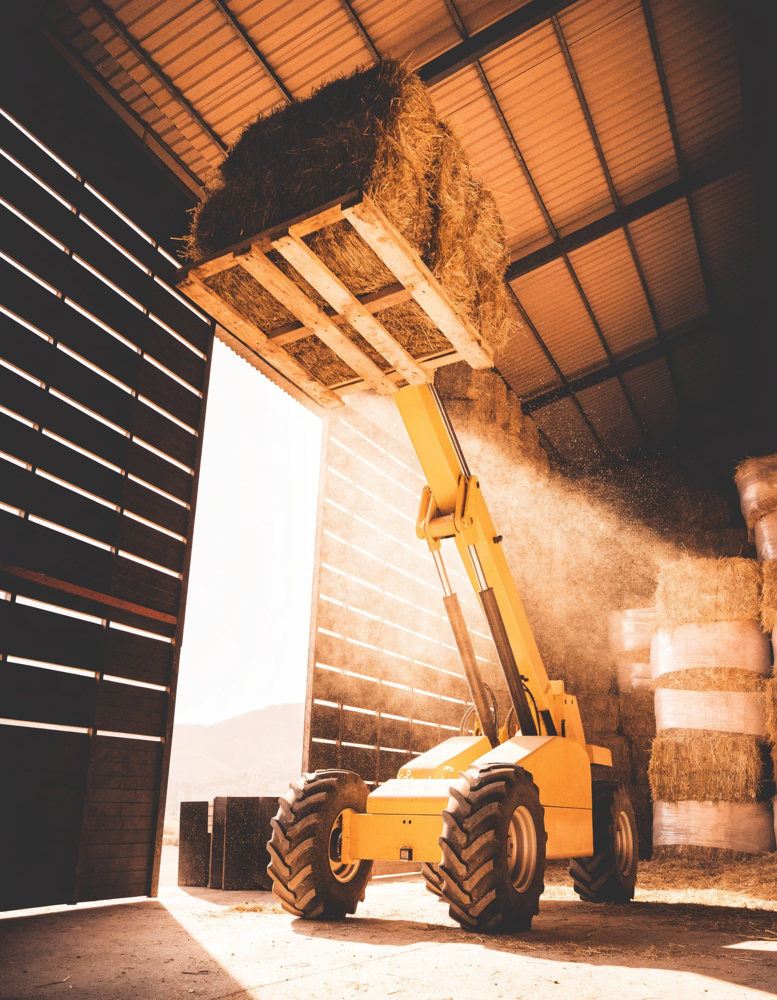
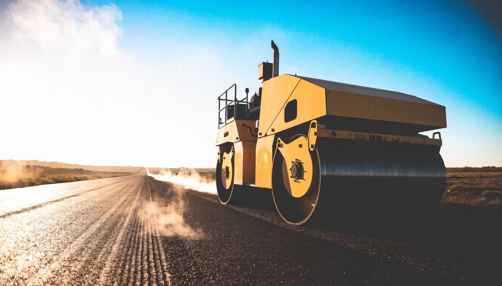

3.295 kilómetros en línea recta entre la primera y la última sucursal. Quince puntos donde hay repuestos, servicio técnico, arriendo y máquinas JCB para la minería, la construcción, el agro y la energía.

Generadores de 20 a 545 kVA en stand-by, torres de iluminación LTM9 y la retroexcavadora 3CX con kit minero, disponibles en arriendo. Cuatro sucursales desde Calama hasta La Serena.


Retroexcavadoras 3CX Eco de 74 a 109 HP, minicargadores 155, 215 y 270, miniexcavadora 65R y excavadoras de 13 a 22 toneladas. Quilicura, Melipilla y Curicó.



Manipuladores telescópicos de 7 a 14 metros, entre ellos el 532-70 AGRI, y cargadores frontales de 2,7 a 3,5 m³. Dos sucursales Agrocampo en Linares y Parral.



Rodillos compactadores VM118 y CT260-120, de 2,7 a 12 toneladas, y toda la gama de construcción con repuestos originales en cada punto. Concepción, Temuco, Osorno y Puerto Varas.


Coyhaique y Punta Arenas cierran la red. Energía e iluminación para faenas remotas, y LiveLink para saber dónde está cada máquina y cuántas horas lleva, en tiempo real.